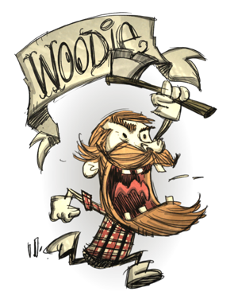

Woodie
He has the same stats as wilson and can destroy anything with his axe and as the werebeaver. Also other players can use his axe at a slower chopping speed, but they can use it an infident amount of times. His beard also provides insulation but it can't be shaved off. He lastly regains sanity by planting trees and eating trees restores his bever meter. THE PERFECT LUMBERJACK!!! (Just make sure to keep the bever meter up or else the curse will arrive.)